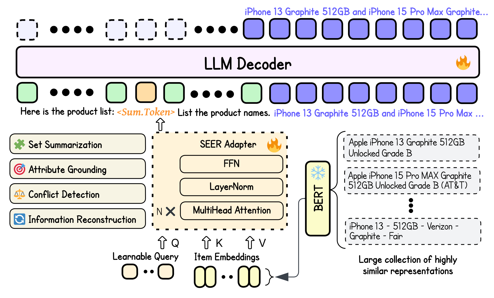
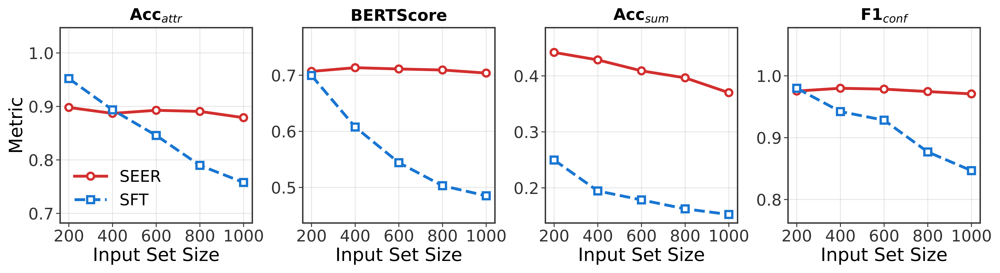

Abstract
Large Language Models (LLMs) perform well across many tasks but degrade when processing large collections of repetitive or highly similar inputs, a common scenario in applications such as near-duplicate search results and large e-commerce catalogs. In these settings, concatenation-based approaches such as long-context prompting and supervised fine-tuning suffer from attention saturation and diminished signal-to-noise ratio, causing models to miss subtle but important distinctions as input size grows. SEER (Set Encoding for Efficient Representation) addresses this problem by compressing a variable-sized item set into a single learned token that can be injected directly into an LLM. Experiments on a large-scale e-commerce dataset show that SEER substantially outperforms in-context and fine-tuned LLM baselines while remaining stable even when processing thousands of highly similar items.
Why SEER Matters
- Built for dense item sets: targets product groups where listings are highly redundant yet differ in fine-grained attributes such as storage, color, or carrier.
- Single-token set interface: replaces prompt concatenation with one learned summary token that preserves both shared signals and subtle contrasts.
- Task-conditioned encoding: uses learnable queries to extract different set views for attribution grounding, set summarization, conflict detection, and reconstruction.
- Industry-scale robustness: maintains strong performance on long input sets far beyond the training range, which is critical for large e-commerce catalogs.
Method Overview

- Frozen item encoder: each listing is first mapped into a semantic embedding using an in-house BERT-based encoder.
- SEER adapter: multi-head attention with learnable task queries aggregates the set into a compact task-conditioned representation.
- Neural injection: the learned vector replaces a special
<summary_token>embedding in the prompt, letting the LLM consume set-level semantics directly. - Staged alignment: first align the adapter to the frozen LLM, then jointly fine-tune both modules for smooth cross-modal integration.
Main Results
| Approach | Acc_attr | Acc_sum / BERTScore | F1_conf |
|---|---|---|---|
| GPT-4.1-mini (ICL) | 0.359 | 0.091 / 0.477 | 0.612 |
| GPT-5 (ICL) | 0.547 | 0.168 / 0.673 | 0.733 |
| LLaMA-3.1-8B (SFT) | 0.847 | 0.188 / 0.567 | 0.916 |
| SEER | 0.889 | 0.401 / 0.709 | 0.976 |
SEER improves over both in-context prompting and supervised fine-tuning across all three evaluation objectives. The largest gain appears in set summarization, where the summary token preserves enough structure for the model to enumerate distinct product concepts without prompt bloat.
Robustness to Large Input Sets

The evaluation set contains up to 1,000 items per sample, far beyond the 100-item maximum used during training. Even under this distribution shift, SEER preserves strong attribute grounding, summarization quality, and conflict detection performance, highlighting its suitability for real-world large-scale product collections.
Experimental Setting
- Dataset: 523,422 unique cellphone listings from eBay.com, covering 2,706 product concepts.
- Training data: 1.5 million examples across attribution grounding, set summarization, conflict detection, and information reconstruction.
- Backbone: LLaMA-3.1-8B-Instruct with a 4-layer multi-head SEER adapter.
- Baselines: GPT-5, GPT-4.1-mini, and a supervised fine-tuned LLaMA-3.1-8B baseline based on prompt concatenation.
Citation
@inproceedings{lin2026seer,
title = {SEER: Set Encoding for Efficient Representation in Large-Scale E-commerce},
author = {Lin, Yining and Shen, Yuming and Zhang, Yipeng and Xu, Canran},
booktitle = {Proceedings of the ACM Web Conference 2026 (WWW '26)},
year = {2026},
address = {Dubai, United Arab Emirates},
doi = {10.1145/3774904.3792958}
}